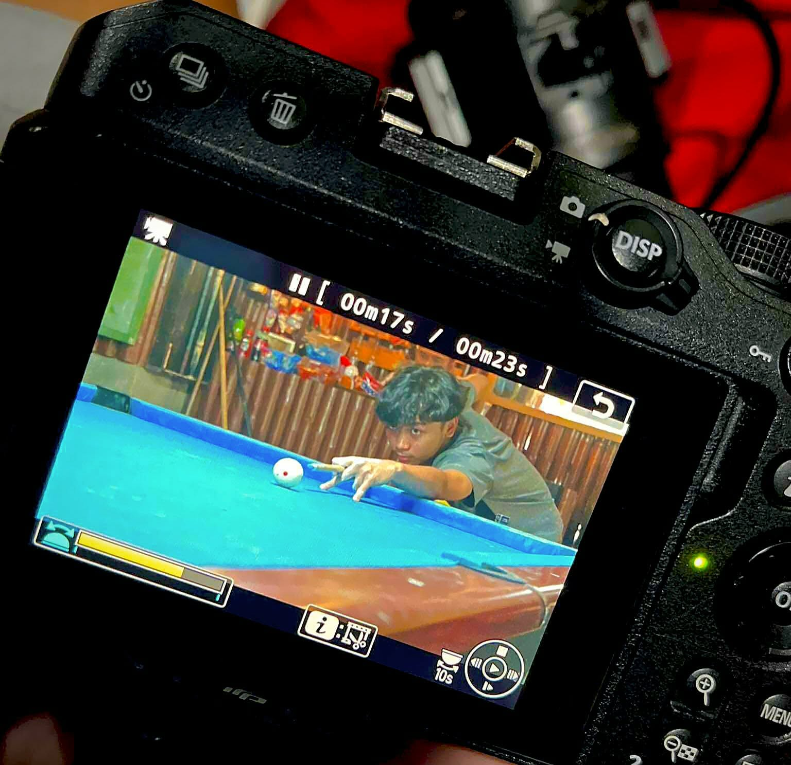
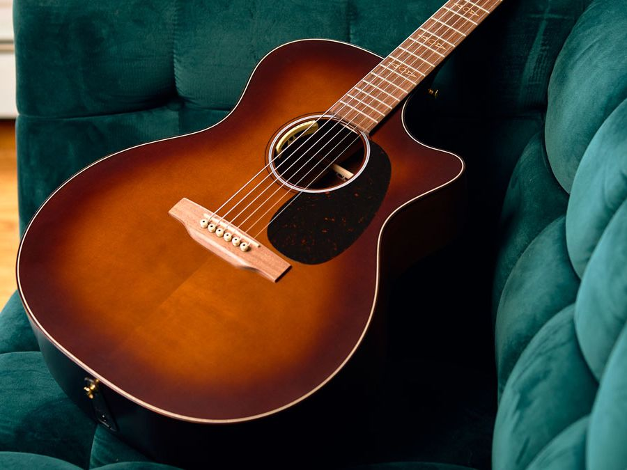
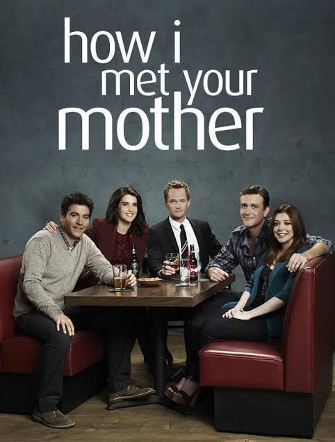

About me
Hello! My name is Jhon Arvy Miguel R. Obsum, but you can call me Arvy or Jam. I am a first-year BSCS student at Bicol University. I live by a personal saying: "Those who give up never succeed." No matter what life throws at me, I will face it head-on, armored or naked. I see tomorrow as a gift—another chance to learn, grow, and become better. I may not be perfect, but I would rather face tomorrow bruised by yesterday's battles than surrender to a future I haven't even tried to reach.
My Interests
The things I love doing.

Billiards

Music

Online Games

TV Sitcoms
My Path into Computing
I chose Computer Science because I grew up in a world full of fantasy on a screen. Even at an early age, I was already playing Dota and all kinds of video games like GTA and CS:GO, and that got me curious about how they are made.
That's why I chose Computer Science as my program, to satisfy that curiosity. So far, I'm enjoying my chosen program and campus. I've made so many friends and experienced all kinds of emotions, along with my ups and downs with the subjects, even though it's only been a few months. Still, I hope to develop discipline first so I can effectively learn everything this course has to offer.
My Favorites
| Category | My Favorite |
|---|---|
| Games | Valorant, Rules of Survival, and League of Legends |
| Free time | Playing the guitar and singing |
| TV | American television sitcoms (HIMYM) and Cartoons |
| Sports | Billiards |
My Favorite Artists and Bands
My Goals in Life
- To be better, by having self-control and discipline.
- To succeed in the things I embark on or plan to do.
- To prove the ones who doubted me wrong.
- To help those in need.
- To be the reason my Dad can finally enjoy life without hardships, after everything he sacrificed to give me the life he never had.
Reflection
During my time making this webpage of mine, I realized that I procrastinate so much which results to me cramming my schoolworks and settling for what I can do for the short amount I am left with. I hope I remove this attitude of mine and become productive and efficient so that I can give it the best that I can show what I am really capable of.
I polished my webpage, or I hope so. I made a couple of adjustments and added new features, as well as more information about me. Compared to my About Me activity, the page now has picture cards for my interests, a table of my favorites instead of my class schedule, round artist photos that link to their Spotify pages, and the big change is the colors, I changed it to my favorite colors so that it suits my preferences. It's now a gray palette and it uses a serif font so the page looks cleaner and more me. I added some hover effects and made the page fit a phone screen. While making it, I also learned Flexbox and Grid to make my webpage more organized.